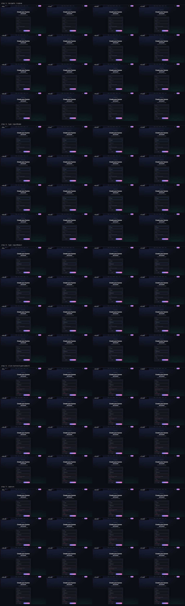

MotionLint · AI design & motion review in your terminal
Your UI moves. MotionLint reviews the motion.
▲ easingease-in on UI motion — entrances use ease-outmotionlint(easing)
A CLI that reviews interfaces the way a design engineer would: vision-LLM UX review,
frame-by-frame animation review, a live animation tuner — and a fully deterministic
linter that grades real computed CSS against
Emil Kowalski's animation standards.
Everything below runs against this five-route demo app (node demo/server.mjs):
hero entrances, staggered pricing cards, form micro-interactions, dashboards, and one
deliberately sluggish loading screen. Real CSS, GSAP, anime.js and Lottie — a fair fight for a linter.
route tour — every page plays its entrance animations on load
four commands
The whole review loop, from one binary
$motionlint audit <url>
Deterministic motion linting — no LLM
audit harvests the page's computed transitions and keyframes with Playwright,
then grades them against machine-encoded standards: easing, duration budgets, physicality,
performance, cohesion and accessibility. Same input, same findings, every run — it's a linter,
so it belongs in CI (--ci exits non-zero on critical findings).
the HTML report it writes — every finding shows current → suggested and cites its standard
$motionlint review <url>
Vision-LLM UX review, multi-viewport
review screenshots the page at mobile, tablet and desktop widths and has a vision model
grade a 12-dimension UX rubric — hierarchy, spacing, contrast, motion, accessibility and more.
Works with Anthropic, OpenAI, Google or local Ollama models; emits Markdown, JSON,
SARIF (for PR annotations) or the HTML report below.
review-report.html
score ring + issue→fix panels with the actual screenshots (this run uses the offline mock provider)$motionlint tune <url>
An animation tuner for your real animations
tune detects every animation on a live page and rebuilds each one in an interactive
workbench: replay it, drag duration and delay, switch to one of Emil's easing presets, and see
inline lint verdicts per animation. When it feels right, export the whole tuning session as a
ready-to-paste prompt for Claude Code.
flow scripts a user journey (navigate /signup; type …; click …; capture),
burst-captures frames around every interaction, and lays them out on a contact sheet a vision model
reviews against the same motion standards — so easing and continuity get judged from evidence,
not vibes. Below: the actual contact sheet from the signup flow, 80 frames.
signup-flow contact sheet — scroll ↓

what the model sees: timestamped bursts after navigation, typing and submit
the standard
Six categories, machine-checkable
The linter encodes Emil Kowalski's animation standards as exact constants — curves, duration
bands, scale floors. To prove it bites, we pointed audit at a playground page built
to fail. Every value below is that run's real output.
16/100Bad Motion Playground — 8 animations measured, 14 findings. The categories below each show one of them.6 warnings · 8 suggestions
Easingwarning
A modal enters with ease-in — it starts slow and delays the exact moment the user is watching.
beforetransition: transform 240ms ease-in
aftercubic-bezier(0.23, 1, 0.32, 1)
Standard — Never ease-in on UI. Entering/exiting → ease-out.
Durationwarning
A stats card animates for 700ms — long transitions read as lag, not polish.
before700ms
after≤ 300ms (150–250ms sweet spot)
Standard — UI animations stay under 300ms; modals/drawers get 200–500ms.
Physicalitywarning
A toast pops in from scale(0) — nothing in the real world appears from nothing.
beforefrom { transform: scale(0) }
afterscale(0.95) + opacity: 0
Standard — Never scale(0). Entrances start from 0.9–0.97.
Performancewarning
A banner animates width, forcing layout + paint every frame. Also flagged: transition: all, and an infinite wiggle on a badge.
beforetransition: width 350ms
aftertransform / opacity
Standard — Only animate transform and opacity; they skip layout/paint.
Cohesionsuggestion
The page hand-rolls 4 distinct cubic-bezier curves — motion stops feeling like one system.
before4 curves
after--ease-out + --ease-in-out tokens
Standard — Curves and durations live as shared tokens.
Accessibilitywarning
Transform-based motion with no reduced-motion path, and hover motion that fires on touch taps.
before(no reduced-motion rule)
after@media (prefers-reduced-motion: reduce)
Standard — Honour prefers-reduced-motion: gentler, not zero.
the artifacts
Reports designed like products
Both HTML reports below are live — scroll them. They dogfood the same standards they enforce:
strong ease-out entrances, sub-300ms staggers, and a reduced-motion path.
The two newest rules in the linter are page-wide: they read the harvested stylesheet itself,
and they only fire when there's evidence — no stylesheet, no guess.
prefers-reduced-motion
If a page animates movement (transform / keyframes) but ships no reduced-motion rule,
motion-sensitive users get no relief — large movement can trigger real vestibular symptoms.
The fix is gentler, not zero: drop transforms, keep opacity.
@media (prefers-reduced-motion: reduce) {
.reveal {
transform: none; /* no movement */
transition: opacity 260ms; /* keep the fade */
}
}
Hover gating for touch
Touch devices fire a synthetic hover on every tap, so ungated :hover motion plays
when nobody asked for it. Gate hover-triggered animation behind media queries that mean
"there is actually a pointer hovering".
✓ This page practices what it lints. Two shared easing tokens
(Emil's ease-out and ease-in-out), every transition ≤ 300ms, scale(0.97) press feedback, hover motion
gated for touch, and a full prefers-reduced-motion path — under reduced motion the reveals become pure
fades and the videos wait for you to press play.